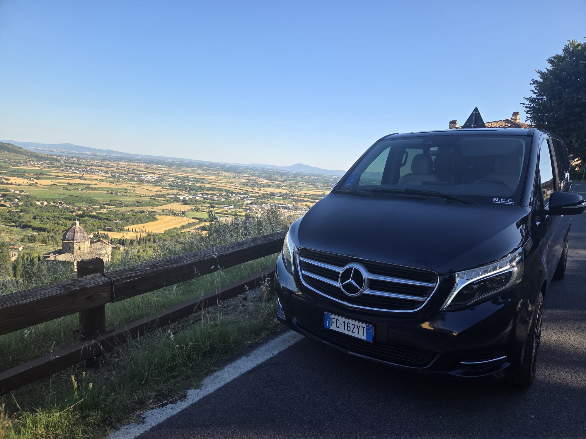

Tour Pompei, Sorrento e Vesuvio
Un tour privato tra storia, mare e natura.
Visita Pompei, Sorrento e il Vesuvio con autista privato, partendo da Napoli, Giugliano, Lago Patria, aeroporto, porto o hotel.

Pompei con transfer privato
Organizziamo trasferimenti verso gli scavi di Pompei con tempi concordati, rientro programmato e possibilità di proseguire verso Sorrento o Vesuvio.
Sorrento e penisola sorrentina
Il tour può includere soste panoramiche, tempo libero a Sorrento e collegamenti con ristoranti, hotel, porti e strutture ricettive.
Vesuvio e wine experience
Su richiesta è possibile abbinare Vesuvio, cantine e degustazioni del territorio con itinerario personalizzato.
Domande frequenti
Posso fare Pompei e Sorrento nello stesso giorno?
Sì, l'itinerario può essere organizzato in giornata in base agli orari di partenza e alle soste desiderate.
Il tour parte da Napoli Aeroporto?
Sì, possiamo partire da Napoli Aeroporto, stazione, porto, hotel o indirizzo privato.
Il prezzo è fisso?
Il preventivo dipende da tratta, durata, numero passeggeri e tappe richieste. Puoi chiederlo via WhatsApp.